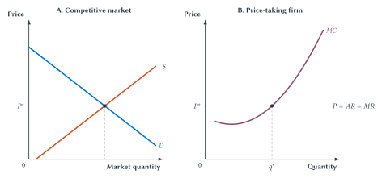
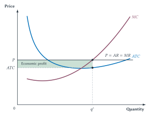
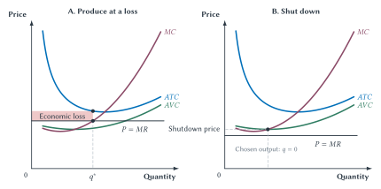
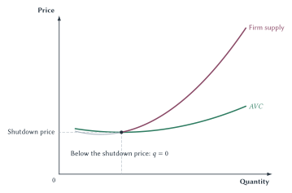
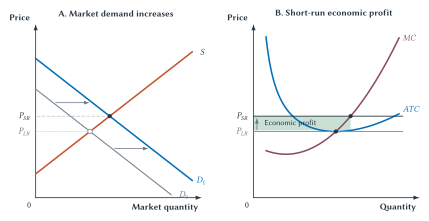
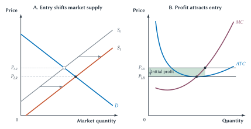
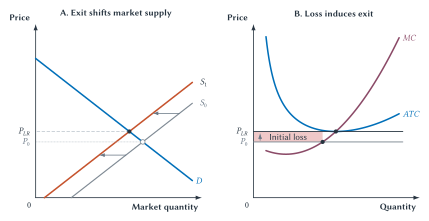
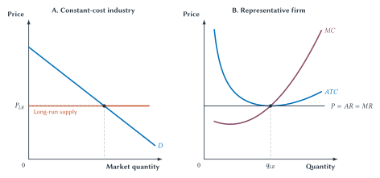

Chapter 14
Perfect Competition
A competitive firm takes the market price as given, chooses output by comparing added revenue with added cost, and faces the discipline of entry and exit.

A wheat farmer finishes the harvest and calls the local grain elevator. The elevator is paying the market price for wheat of that grade. The farmer can accept the price, store the wheat, or try another buyer. What the farmer cannot realistically do is demand a dollar more per bushel and expect buyers to keep purchasing the same amount. Many other farmers are selling a nearly identical product.
The farmer is a price taker. The market determines the price. The farmer takes that price as given.
Price taking does not leave the farmer with nothing to decide. The farmer still chooses how much land to plant, how intensively to cultivate it, whether another application of fertilizer is worthwhile, when to harvest, and whether expected revenue will justify planting again next year. A competitive firm cannot choose the market price, but it makes important decisions about output, operation, entry, and exit.
Chapter 13 developed the firm’s cost curves. This chapter adds revenue. In the short run, the firm asks whether producing another unit adds more revenue than cost and whether operating covers the costs that shutdown would avoid. In the long run, economic profit attracts entry and economic loss encourages exit.
That long-run adjustment gives competition much of its force. When other firms can enter on comparable terms, unusually high economic profit is an invitation. Rivals enter, market supply expands, and economic profit is pushed downward. Competition is therefore not merely a description of how many firms exist today. It is an ongoing process in which prices, costs, economic profit, economic loss, entry, and exit redirect resources.
Market Structure And The Competitive Benchmark
Economists use market structure to describe the competitive setting in an industry. The main questions are straightforward:
- How many important sellers are there?
- Are their products identical or different?
- How easy is it for new firms to enter and unsuccessful firms to leave?
- Can one firm affect price?
- Must each firm anticipate how rivals will respond?
The broader branch of economics that studies how firms compete is called industrial organization. It examines prices, output, entry, advertising, innovation, contracts, and public policy across different kinds of markets.
This chapter begins a four-chapter sequence. The models in Table 14.1 are not filing cabinets into which every real industry must fit perfectly. They are benchmarks that isolate different forces.
| Benchmark | Sellers | Product | Entry | Main Firm Decision |
|---|---|---|---|---|
| Perfect competition | Many small sellers | Identical or highly comparable | Open in the long-run benchmark | Take price as given and choose output |
| Monopoly | One seller with no close substitute | Unique | Blocked by strong barriers | Search among price-quantity choices |
| Monopolistic competition | Many sellers | Differentiated | Relatively easy | Choose price and product while entry limits long-run economic profit |
| Oligopoly | A few important sellers | Identical or differentiated | Often difficult | Anticipate rivals’ responses |
Table 14.1. Four market structures organize the next four chapters. Perfect competition is the starting benchmark. Chapters 15 through 17 change the assumptions about substitutes, entry, and strategic interaction.
Quick Concept
Market Structure
Market structure describes the competitive setting in an industry: the number and size of sellers, how similar their products are, how easy entry and exit are, how much control firms have over price, and whether firms must anticipate one another’s choices.
Sideline
Industrial Organization
Industrial organization is the part of microeconomics that studies how firms compete and how the organization of an industry affects prices, output, innovation, and economic welfare. The four market structures are useful models within that larger field.
The Assumptions Of Perfect Competition
The model of perfect competition rests on a small set of strong assumptions:
- Many buyers and sellers participate. Each firm is small compared with the whole market.
- Firms sell identical or highly comparable products. Buyers do not care which firm produced a particular unit.
- Buyers and sellers can respond to price. Customers can switch sellers, and firms can adjust production.
- Entry and exit are open in the long run. Potential rivals are not persistently prevented from obtaining inputs and competing on comparable terms.
Wheat is not perfectly competitive in every detail. Grades differ, transportation costs matter, and some buyers or sellers may be locally important. The model is still useful because it captures a central feature of many commodity markets: an individual producer has little power over the market price.
Perfect competition is therefore a benchmark, not a claim that every competitive market satisfies every assumption exactly. It gives us a clear starting point. Once we understand what price taking and open entry do, later chapters can change those conditions one at a time.
Common Mistake
Models Are Tools, Not Filing Cabinets
Real markets can combine features of several market structures. Use the models to identify which forces matter. Do not force every industry into one perfect category.
The Market Sets The Price
Market demand and market supply determine the equilibrium price. Chapter 4 explained why a shortage pushes price upward and a surplus pushes it downward. A small competitive firm enters after that market process has established a price.
Suppose the market price of wheat is $6 per bushel. One farmer can sell a bushel for $6. If the farmer asks $7 for an identical bushel while many others sell for $6, buyers go elsewhere. If the farmer charges $5, the farmer gives up a dollar without needing to do so.
The competitive firm therefore faces a horizontal demand curve at the market price. It can sell its own feasible output at that price, but it cannot profitably charge more.
This horizontal line is easy to misread. It is the demand facing one firm, not demand for the whole market. Market demand still slopes downward. The difference comes from scale. One farmer’s output is tiny compared with all the wheat bought and sold, so changes in that farmer’s production do not noticeably change the market price.
Quick Concept
Price Taker
A price-taking firm accepts the market price as given because its own output is too small to affect that price.
Revenue For A Price Taker
Total revenue, written TR, is
price times the firm’s quantity of output:
\[ TR = P \times q. \]
We use lowercase \(q\) for one firm’s output and uppercase \(Q\) for the quantity produced by the entire market.
If price is $6 and the farmer sells 100 bushels, total revenue is $600. Selling the 101st bushel raises total revenue by another $6. Selling the 102nd raises it by another $6.
The revenue added by one more unit is marginal
revenue, or MR. For a price taker,
marginal revenue equals price because every additional unit can
be sold at the market price without cutting the price on earlier
units:
\[ MR = P. \]
Average revenue, or AR, is
total revenue divided by quantity. Since total revenue is price
times quantity, average revenue also equals price:
\[ AR = \frac{TR}{q} = P. \]
That is why the firm’s graph labels one horizontal line \(P = AR = MR\). The three names describe different ideas, but they have the same value for a price-taking firm.
Figure 14.1 puts the market and firm side by side. The left panel shows market demand and supply determining \(P^*\). The right panel carries that same price into the individual firm’s decision. Market quantity is labeled \(Q\); firm output is labeled \(q\).
Figure 14.1. The market determines price; the competitive firm chooses output. The two panels share the same price, \(P^*\). The individual firm’s horizontal demand and marginal-revenue line meets rising marginal cost at the firm’s chosen output, \(q^*\). To the left of \(q^*\), price exceeds marginal cost and the firm should produce more. To the right, marginal cost exceeds price and the firm should produce less.
Choosing Output At The Margin
The firm now has two pieces of information:
- Marginal revenue tells it what one more unit adds to revenue.
- Marginal cost tells it what one more unit adds to cost.
The rule from Chapter 1 does the rest.
If another bushel adds $6 to revenue and $4 to cost, producing it adds $2 to profit. If another bushel adds $6 to revenue and $8 to cost, producing it reduces profit by $2.
Read Figure 14.1 by comparing the height of the price line with the height of the marginal-cost curve at the firm’s current output:
- When \(P > MC\), the next unit adds more to revenue than to cost. Producing more increases profit.
- When \(P < MC\), the last unit costs more than it adds to revenue. Producing less increases profit by avoiding that unit.
- When \(P = MC\), neither
producing a little more nor producing a little less will
increase profit. This identifies the best positive output on the
rising part of
MC.
The firm should therefore expand output while marginal revenue exceeds marginal cost. It should reduce output when marginal cost exceeds marginal revenue. The best positive output occurs where the two become equal:
\[ MR = MC. \]
Because marginal revenue equals price for a competitive firm, the same rule can be written:
\[ P = MC. \]
This is not a mysterious new formula. It says: keep producing while the next unit adds more to revenue than to cost, and stop before the next unit would add more to cost than to revenue.
The firm is maximizing profit, not necessarily producing as much as physically possible and not maximizing revenue. Producing beyond \(q^*\) would still bring in revenue, but those extra units would cost more to produce than they add to revenue.
Key Point
The Competitive Firm Uses The Marginal Rule
For a price taker, \(MR = P\). If \(P > MC\), produce more. If \(P < MC\), produce less. The firm chooses the positive output where \(P = MC\) on the rising part of marginal cost, provided operating is better than shutting down.
That final qualification matters. Finding where price equals marginal cost identifies the best positive output. The firm must still ask whether producing at all covers the costs that production creates.
Economic Profit
The output rule uses marginal values. To determine whether the firm earns economic profit, we compare price with average total cost at the chosen output.
Suppose price is $10, average total cost at \(q^*\) is $8, and the firm sells 1,000 units. It earns $2 per unit after covering all economic costs. Total economic profit is $2,000.
In general:
\[ \text{Economic profit} = (P - ATC) \times q. \]
Figure 14.2 shows the same calculation as a rectangle. The rectangle’s height is price minus average total cost. Its width is the number of units sold. Height times width is economic profit.

Figure 14.2. Price above average total cost creates
economic profit. The firm produces \(q^*\) where the horizontal price
line meets MC. At that output, price exceeds
ATC. The shaded rectangle has height \(P - ATC\) and width \(q^*\), so its area is the firm’s
economic profit.
Remember the lesson of Chapter 13. Economic cost includes the normal return required to keep the owner’s time, money, and other resources in this business. Positive economic profit means the firm has earned more than those resources could earn in their next-best comparable use.
If price exactly equals average total cost at the chosen output, economic profit is zero. The owner still receives a normal return. Zero economic profit is not the same as zero accounting profit or no income for the owner.
Common Mistake
Zero Economic Profit Does Not Mean The Owner Earns Nothing
Zero economic profit means that revenue covers all explicit costs and all implicit opportunity costs, including the normal return needed to keep owner-supplied resources in the business.
Loss, Shutdown, And Exit
What if price is below average total cost? The firm earns an economic loss. That fact alone does not tell it to stop producing immediately.
The key is to separate two decisions:
- Shutdown is a short-run decision to produce zero while the firm still bears its fixed commitments.
- Exit is a long-run decision to leave the industry after commitments can be changed or ended.
A firm that shuts down may still owe rent, loan payments, insurance, or other fixed costs. If those costs must be paid either way, shutting down does not avoid them. The short-run question is whether operating revenue covers the costs that operation adds.
Producing At A Loss Can Reduce The Loss
Suppose price is below ATC but above
AVC at the output where \(P = MC\). Revenue does not cover
total cost, so the firm loses money. But price does cover
average variable cost. Operating pays all variable costs and
contributes something toward fixed costs.
Shutting down would leave the firm with the entire fixed cost and no revenue. Producing creates a smaller loss.
A firm that loses money by operating may lose even more by shutting down. The short-run question is not “Are we losing money?” but “Which choice loses less?”
Strip the example down to two inputs: rented capital and labor. Suppose the firm owes $1,000 in rent this month whether it opens or closes, while it pays the wage bill only if it operates. If opening generates $800 in revenue and requires $600 in wages, the firm should open. It pays the workers and has $200 left to put toward rent. Its loss is $800 instead of the $1,000 it would lose by closing. In this simple example, if revenue covers the wage bill, staying open reduces the loss. If revenue does not cover the wage bill, operating only makes the loss larger.
Real firms have more than two costs, of course. The general rule is to compare revenue with all costs that operating creates or that shutdown would avoid. The rent-and-wages example simply makes that comparison visible.
The rent-and-wages example gives us the most intuitive version of the short-run operating test:
\[ TR \geq VC. \]
If total revenue exceeds variable cost, operating pays every variable cost and contributes something toward fixed cost. If total revenue is less than variable cost, the firm should shut down. If the two are exactly equal, the firm is indifferent: operating and shutting down produce the same loss.
For a positive output, divide both sides by the number of units produced, \(q\):
\[ \frac{TR}{q} \geq \frac{VC}{q}. \]
Total revenue per unit is average revenue, which equals price for a competitive firm. Variable cost per unit is average variable cost. The same test can therefore be written:
\[ P \geq AVC. \]
This per-unit version is useful because price and
AVC appear directly in the firm’s graph. The two
tests say exactly the same thing. Neither says that total
revenue must cover total cost in the short run.
If price falls below minimum AVC, even the best
positive output fails to cover variable cost. Producing would
add more avoidable cost than revenue, so the firm shuts down and
produces zero.

Figure 14.3. A loss does not always require immediate
shutdown. In panel A, price lies below ATC
but above AVC, so the firm produces \(q^*\) and covers variable cost plus
part of fixed cost. In panel B, price lies below minimum
AVC, so the firm’s chosen short-run output is
zero.
A Hotel Room And A Slow Laundromat
Imagine a hotel with an empty room at 8 p.m. The building, mortgage, front desk, and basic security are already paid for that night. Renting the room creates additional costs: cleaning, laundry, toiletries, a little electricity and water, and perhaps a booking fee.
The hotel may rationally accept a last-minute room rate below average total cost if the rate covers those added costs. The payment contributes something toward costs the hotel must bear whether the room is occupied or empty.
A laundromat faces a related but different choice during a slow evening. Remaining open for another hour may require water, electricity, cleaning, and avoidable staffing expense. If the few customers present cover those costs, staying open can reduce the day’s loss even if the hour’s revenue does not cover a proportional share of rent and equipment cost.
The exact avoidable costs depend on the choice. Selling one more hotel room, keeping a laundromat open for another hour, shutting down for a season, and leaving an industry are not the same decision.
Case Study
Operating At A Loss Can Minimize The Loss
An empty hotel room and idle washing machines cannot be stored and sold tomorrow. When current revenue covers the costs caused by operating, the firm can use that revenue to pay part of its unavoidable fixed commitments. A short-run loss therefore does not prove that immediate shutdown is best.
Fixed Is Not Always Sunk
Chapter 13 distinguished fixed from sunk cost. The distinction is crucial here.
A fixed cost does not change with current output. A sunk cost cannot be recovered once incurred. Many fixed costs are sunk for an immediate operating decision, but the terms are not synonyms. A building lease may be fixed this month yet avoidable when the lease expires. Equipment may be fixed for today’s production but recoverable if it can be sold.
The firm should ignore a sunk cost when comparing choices that cannot change it. It should not ignore a fixed commitment that one of the choices can still avoid.
Common Mistake
Use The Correct Revenue Comparison
The short-run operating condition \(P \geq AVC\) is equivalent to \(TR \geq VC\). It is not equivalent to \(TR \geq TC\). Revenue can fall short of total cost and production can still reduce the firm’s loss.
From Marginal Cost To Supply
Chapter 3 defined a supply curve as the quantity sellers are willing and able to offer at each possible price, holding other conditions constant. We can now explain where that curve comes from for a competitive firm.
At each possible market price, the firm chooses the profit-maximizing output where \(P = MC\), provided price is high enough for the firm to operate. If price rises, the horizontal price line meets rising marginal cost farther to the right, so the firm produces more. If price falls, the meeting point moves left and the firm produces less.
Plot each possible price together with the output the firm chooses at that price. The resulting points trace the firm’s supply curve. A change in price therefore causes a movement along the supply curve, just as Chapter 3 explained. A change in wages, input prices, technology, or another production condition can shift marginal cost and therefore shift the firm’s supply curve.
But the shutdown rule removes the part of marginal cost below
minimum AVC. At prices below that point, the firm
supplies zero.
The competitive firm’s short-run supply curve is therefore the rising portion of its marginal-cost curve at or above minimum average variable cost.

Figure 14.4. Marginal cost becomes firm supply above
the shutdown price. At or above minimum
AVC, the firm chooses the quantity where price
equals MC. Below the shutdown price, the firm
supplies zero in the short run.
From Firm Supply To Market Supply
The market contains many firms. At a particular price, ask how much each existing firm supplies and add those quantities. Repeating that calculation at each price creates the market short-run supply curve.
Suppose 100 identical farms each supply 1,000 bushels at a given price. Market quantity supplied is 100,000 bushels. If the farms differ in cost, the method is unchanged: add the quantities each farm chooses at that price.
The short-run market curve includes only firms already in the industry. The long run adds another adjustment. Firms can enter and leave.
| Supply Concept | Who Decides? | Cost Test | How It Is Found |
|---|---|---|---|
| Firm’s short-run supply | One price-taking firm | Operate when \(TR \geq VC\), or \(P \geq AVC\) | Choose where \(P = MC\), or supply zero below the shutdown price |
| Market short-run supply | Existing firms | Each firm applies its own operating test | Add all firms’ quantities supplied at each price |
| Long-run industry supply | Existing firms and potential entrants | Revenue must cover all economic costs | Combine production decisions with entry, exit, and any changes in input costs |
Table 14.2. Short-run and long-run supply involve different decisions. The short run holds the number of firms fixed. The long run allows resources and firms to enter or leave the industry.
Entry, Exit, And Market Discipline
Economic profit and economic loss are signals.
Before following those signals, recall exactly what economic profit means. Positive economic profit exists when total revenue exceeds total economic cost:
\[ TR > TC. \]
At the firm’s chosen output, the same condition appears in per-unit form as:
\[ P > ATC. \]
Here, total cost and average total cost include both explicit payments and implicit opportunity costs. In particular, they include the normal return needed to compensate owners for the money and other resources they have committed to the firm. A business can therefore report a positive accounting profit while earning zero economic profit. The positive economic profit that attracts entry is a return above all economic costs, including the normal return on capital.
Positive economic profit says that resources in this industry are earning more than in comparable alternatives. If new firms can enter on similar terms, they have a reason to do so. Economic loss says that resources could earn more elsewhere. When long-run commitments can be changed, some firms have a reason to leave.
Entry and exit are therefore part of decentralized coordination. No central office must order firms into an industry earning economic profit or remove resources from one suffering economic loss. Owners respond to expected gain and loss.
How Economic Profit Appears
Economic profit does not require a firm to have market power. It can arise simply because market conditions change before the number of firms has time to adjust.
Suppose an industry begins in long-run equilibrium, where price covers all economic costs and each firm earns zero economic profit. Now demand for the product increases. In the short run, the firms already in the industry can produce more, but new firms have not yet entered. Market demand shifts right while short-run market supply remains fixed, so the market price rises from \(P_{LR}\) to \(P_{SR}\).
Every price-taking firm now faces that higher price. Its cost curves have not changed, but its horizontal price and marginal-revenue line moves upward. The firm expands output along its marginal-cost curve. At the new output, price exceeds average total cost, so the firm earns positive economic profit.

Figure 14.5. A demand increase can create short-run
economic profit. Market demand shifts right while the
number of firms and short-run market supply remain fixed. Price
rises from \(P_{LR}\) to \(P_{SR}\). The representative firm
takes that higher price as given, expands output along
MC, and earns economic profit because price now
exceeds ATC.
This economic profit is a signal that the industry has become more attractive. Figure 14.5 shows how the signal appears. The next figure shows how entry responds to it.
Economic Profit Attracts Entry
Figure 14.5 ends with existing firms earning positive economic profit. If potential entrants can rent suitable space, hire workers, obtain equipment, and reach customers on comparable terms, some will enter.
The full sequence is:
- Existing firms earn positive economic profit because price exceeds average total cost.
- Expected economic profit attracts new firms.
- Entry increases market supply.
- Greater market supply lowers the market price.
- The lower market price also lowers each price-taking firm’s horizontal price and marginal-revenue line.
- Entry continues until the remaining economic profit has been competed away in the long-run benchmark.
Figure 14.6 shows both the market and one representative firm. It begins at the short-run price and economic-profit position where Figure 14.5 ends. The price in the two panels is always the same.

Figure 14.6. Economic profit attracts entry. Entry shifts market supply right and lowers price from \(P_{SR}\) to \(P_{LR}\). That same price change lowers the firm’s horizontal price line. In the constant-cost benchmark, entry ends when price covers all economic costs and economic profit is zero.
This process pushes price toward economic cost, not necessarily toward a low dollar amount. If the industry requires expensive materials, skilled labor, insurance, financing, and risky investment, a competitive price can remain high. Competition asks whether revenue exceeds all opportunity costs, not whether the sticker price looks large.
Key Point
Free Entry Disciplines Economic Profit
When firms earn economic profit and potential rivals can enter on comparable terms, entry expands market supply and reduces economic profit. In the long-run competitive benchmark, price is pushed toward full economic cost, including the normal return on owner-supplied resources.
Economic Loss Encourages Exit
The same logic can create an economic loss. Imagine that an industry begins in long-run equilibrium and market demand then decreases. Read the first half of Figure 14.5 in reverse: demand shifts left while the number of firms and short-run market supply remain fixed. The market price falls, each firm’s horizontal price line falls by the same amount, and each firm reduces output along its marginal-cost curve. If the new price is below average total cost, existing firms earn an economic loss.
That economic loss is the starting point in Figure 14.7. The short-run demand decrease and the long-run exit response are two separate steps:
- Lower demand creates an economic loss because price falls below average total cost.
- Some firms continue operating in the short run if price still covers average variable cost.
- As contracts expire and other commitments become avoidable, some firms exit.
- Exit reduces market supply.
- The lower market supply raises the market price and each remaining firm’s horizontal price line.
- Exit continues until the representative firm again covers all economic costs in the long-run benchmark.

Figure 14.7. Economic loss encourages exit. Exit shifts market supply left and raises price from \(P_0\) to \(P_{LR}\). The higher price raises the remaining firm’s horizontal price line. In the long-run benchmark, exit ends when the firm covers all economic costs.
Key Point
Economic Profit And Loss Redirect Resources
Economic profit attracts firms and resources when entry is open. Economic loss encourages exit when commitments can be changed. Entry and exit help move resources toward uses where they create more value.
Long-Run Competitive Equilibrium
In the simplest long-run model, firms are identical, input prices do not change as the industry expands or contracts, and entry and exit are open. Entry eliminates positive economic profit. Exit eliminates economic loss.
The process ends when price equals minimum average total cost for the representative firm. At that point:
- the firm chooses output where \(P = MC\);
- price covers average total cost;
- economic profit is zero;
- no firm has a reason to enter or exit based on economic profit or economic loss alone.
This condition is called long-run competitive equilibrium.
Alfred Marshall made this difference between short-run production and long-run adjustment central to competitive analysis. Given enough time, plant size, capital, and the number of firms can all change. Normal returns are therefore part of the supply price needed to keep resources in an industry.1

Figure 14.8. The constant-cost long-run competitive benchmark. The market price \(P_{LR}\) equals long-run industry supply in the left panel. The representative firm in the right panel takes that same price as given and produces where price, marginal cost, and minimum average total cost meet.
Why Zero Economic Profit Is An Equilibrium
Zero economic profit can sound disappointing until we remember what it includes. Workers receive wages. Lenders receive interest. Landlords receive rent. Owners receive the normal return needed to keep their money and effort in the firm. Every resource is paid its opportunity cost.
Zero economic profit does not make entrepreneurship pointless. It means an opportunity that other firms can copy will not remain unusually profitable.
What disappears is the extra return above those opportunity costs. If that extra return remained and entry were truly open, it would keep attracting rivals.
This is one of the strongest implications of the competitive model: in the absence of barriers and important frictions, price is driven toward the full economic cost of serving customers.
That proposition does not say every firm is identical forever or every market adjusts instantly. Innovation can create temporary economic profit. Demand and costs can change. Firms can make mistakes. The model says that persistent economic profit requires an explanation. What prevents entry, imitation, expansion, or substitution from eroding it?
Long-Run Supply Need Not Always Be Horizontal
Each point on a long-run industry supply curve represents an outcome after firms have had time to enter or exit and after firms have adjusted all inputs. The curve’s shape depends partly on what happens to firms’ costs as the entire industry expands.
Figure 14.8 uses a constant-cost industry. Entry expands output without changing the prices of the inputs firms use. New firms face the same cost curves as existing firms, so after entry the long-run price returns to the same minimum average cost. Long-run industry supply is horizontal in this benchmark.
In an increasing-cost industry, expansion raises the costs faced by firms. Suppose wheat production expands in a region with a limited amount of especially suitable land. New and expanding farms bid up land rents, and some production moves onto less suitable land. The industry can still expand, but it needs a higher price to cover the higher economic cost. Long-run industry supply therefore slopes upward.
In a decreasing-cost industry, expansion lowers the costs faced by firms. A larger food-processing industry, for example, may support specialized equipment suppliers, repair services, storage facilities, and transportation networks that would not exist for a very small industry. Those supporting businesses can lower costs for individual producers. Over that range, the industry may be able to supply a larger quantity at a lower long-run price, so long-run industry supply slopes downward.
Do not confuse an increasing-cost industry with one firm’s diseconomies of scale. Diseconomies of scale ask what happens to one firm’s average cost when that firm expands all its inputs. An increasing-cost industry asks what happens to firms’ input prices and cost curves when the whole industry expands through entry. Similarly, a decreasing-cost industry can reflect benefits created by a larger industry even when no individual firm becomes larger.
A downward-sloping long-run supply curve also does not overturn the law of supply from Chapter 3. That law describes movement along a supply curve while other supply conditions are held constant. Along a long-run industry supply curve, industry size, entry, supporting suppliers, and firms’ costs have all had time to change.
The shape can differ, but the durable rule remains: in the long run, expected revenue must cover all economic costs, and industry supply reflects both production by existing firms and the entry or exit of firms.
What Does Free Entry Mean?
Free entry does not mean starting a firm is free of cost. A new wheat farm still needs land and equipment. A new laundromat still needs machines, a location, financing, permits, and customers.
Free entry means potential competitors are not persistently prevented from obtaining needed inputs and competing on reasonably comparable terms. A cost that every firm must bear may affect the size of firms and the number that fit in the market. It does not automatically protect existing firms.
Entry can be weakened by legal restrictions, control of essential inputs, large sunk investments, exclusive contracts, switching costs, poor information, or rules that favor incumbents. Some of those are formal barriers to entry. Others are frictions that make competition slower or less effective.
The distinction matters. If an industry appears to earn positive economic profit, the economic question is not merely, “Is starting a business expensive?” It is, “What prevents a capable entrant from paying the same necessary costs and competing for that economic profit?”
Cost Structure Can Complicate The Benchmark
Chapter 13 ended with firms that have very large fixed costs and very low marginal costs. These industries do not fit the simple benchmark as neatly.
Suppose a network costs billions of dollars to build but costs very little to serve one more customer. A price equal to marginal cost may not produce enough revenue to pay for the network. If average cost keeps falling across the amount the whole market demands, having many firms duplicate the same network may also raise total cost.
Charging what the next unit costs to produce can be efficient and still leave the firm unable to pay for the system that makes that unit possible.
Large fixed cost alone does not prove monopoly. Ask whether the investment is sunk, whether average cost continues falling over the relevant range, and whether entrants can reproduce the needed capacity on comparable terms. Chapter 15 studies the natural-monopoly problem in full.
Sideline
Cost Structure Shapes Market Structure
When fixed costs are very large and marginal cost is very low, marginal-cost pricing may not cover total cost. If average cost keeps falling across the quantity the market demands, duplicating the same fixed investment across many firms may also be costly. These facts can weaken the simple competitive benchmark, but they do not by themselves prove monopoly.
Rent-To-Own: Diagnosing A High Price
A rent-to-own customer can take home furniture, an appliance, or electronics after making a small initial payment. The contract may allow the customer to return the product and stop future payments. If the customer makes every scheduled payment, ownership transfers.
Add those payments together and the total can be far above the product’s cash price. A 1993 Wall Street Journal investigation used such comparisons while reporting allegations about sales methods, repossession, and collection conduct. A later Federal Trade Commission survey also found high total purchase costs and reports of possibly abusive collection practices, while finding that many surveyed customers completed purchases and reported satisfaction.2
The large payment difference is worth investigating. It is not, by itself, proof of monopoly or positive economic profit. Begin with the chapter’s central implication: when entry is open, positive economic profit attracts competitors and price is pushed toward economic cost.
Suppose the scheduled payments contain a large return above every economic cost. If another firm can obtain the same products and financing and compete for the same customers, that economic profit is an invitation. An entrant can offer lower total payments or better terms and still earn a return. Customers have a reason to switch, market supply expands, and incumbent firms must respond. Entry should continue until the extra economic profit has been competed away.
That leads to the question students should ask: If the difference is mostly economic profit and entry is genuinely open, why has no rival offered customers a better deal?
There are several possible answers. The payment comparison may omit important economic costs. Entry may be harder than it appears. Customers may have difficulty understanding contracts, comparing terms, or switching providers. Or the industry may face problems of disclosure and collection conduct that ordinary price competition does not directly solve.
Rent-to-own firms may bear costs that a cash-price comparison misses: financing, delivery, service, collection, default risk, returned merchandise, and the customer’s option to end the agreement. Actual contract outcomes can also differ from the sum of every scheduled payment because customers may return products or use early-purchase options.3
This reasoning is a test, not an automatic defense of the industry. Open entry should compete away economic profit, but it does not make misleading disclosure or abusive collection harmless. Cost, economic profit, entry conditions, information, and business conduct remain separate questions requiring separate evidence.
Common Mistake
High Price Is Not Proof Of High Economic Profit
A high price can reflect high production, financing, risk, service, or collection costs. Economic profit compares revenue with all opportunity costs. Price alone does not reveal that comparison.
The larger lesson extends far beyond rent-to-own. Words such as expensive, profitable, monopolistic, and exploitative describe different claims. Economic reasoning asks what evidence would establish each one.
Competition, Efficiency, And The Next Question
Chapter 6 showed that the competitive quantity maximizes total surplus when the benchmark conditions hold. This chapter explains what firms are doing behind that result.
For a price-taking firm, price measures the value buyers place on another unit at the market margin. Marginal cost measures the resources needed to produce it. When the firm produces where \(P = MC\), it does not leave units unproduced for which value exceeds cost, and it does not produce units whose cost exceeds value.
The farmer is not trying to maximize total surplus. The farmer is trying to earn economic profit. Under competitive conditions, the market price leads the farmer to stop at the same margin society cares about: the value of the next unit equals the cost of producing it.
Entry adds another kind of discipline. In the standard long-run benchmark, firms produce at minimum average total cost. If one firm wastes resources and has higher costs than rivals, it cannot simply pass every mistake to buyers. Rival firms have a reason to win those customers.
The result is powerful, but conditional. It depends on price taking, open entry, comparable access to inputs, and the absence of major information or contracting problems. Those conditions should be examined, not merely assumed.
When they hold reasonably well, competition coordinates output and pushes price toward economic cost without a planner choosing each firm’s production. When they do not hold, the next question is why. Chapter 15 begins with the clearest answer: a seller protected by barriers to entry and facing no close substitute.
Study And Learn
Chapter Study Map
Core Ideas
- Market structure describes the competitive setting in an industry.
- A price-taking firm accepts the market price but still chooses output.
- For a competitive firm, \(P = AR = MR\).
- The firm expands output while marginal revenue exceeds marginal cost.
- Economic profit compares price with average total cost at the chosen output.
- A short-run loss does not always require shutdown.
- The firm’s short-run supply curve is rising
MCat or above minimumAVC. - Market short-run supply adds the output of existing firms.
- Economic profit attracts entry; economic loss encourages exit.
- Zero economic profit includes a normal return to owner-supplied resources.
- Open entry pushes price toward full economic cost.
Figures And Tables
- Table 14.1: compare the four market-structure benchmarks.
- Figure 14.1: carry the market price into the individual firm’s output decision.
- Figure 14.2: measure economic profit as a rectangle.
- Figure 14.3: distinguish producing at a loss from shutting down.
- Figure 14.4: identify the firm’s short-run supply curve.
- Table 14.2: separate firm short-run, market short-run, and long-run industry supply.
- Figure 14.5: show how a demand increase creates short-run economic profit.
- Figures 14.6 and 14.7: narrate entry and exit step by step.
- Figure 14.8: read the constant-cost long-run competitive benchmark.
Reasoning Tasks
- Distinguish the downward-sloping market demand curve from the horizontal demand facing one competitive firm.
- Explain \(MR = P\) in words before using the equation.
- Use marginal revenue and marginal cost to choose output.
- Calculate economic profit or economic loss from price, average total cost, and quantity.
- Compare the loss from operating with the loss from shutting down.
- Convert \(P \geq AVC\) into the equivalent \(TR \geq VC\) test.
- Build market supply by adding firms’ quantities at a given price.
- Narrate every link from economic profit to entry and from economic loss to exit.
- Separate a high price from high economic profit, an entry barrier, or harmful conduct.
Common Mistakes
- Treating perfect competition as a literal description of every competitive market.
- Saying a price taker has no decisions to make.
- Confusing market quantity \(Q\) with one firm’s output \(q\).
- Treating the firm’s horizontal demand curve as the market demand curve.
- Producing where \(P = MC\)
even when price is below
AVC. - Using \(TR \geq TC\) as the short-run operating test.
- Treating every fixed cost as sunk.
- Confusing shutdown with exit.
- Saying zero economic profit means the owner earns nothing.
- Assuming a high sticker price proves excess economic profit.
Looking Ahead
Chapter 15 asks what changes when one seller has no close substitute and entry cannot quickly compete away its market power. Chapter 16 keeps entry but adds differentiated products. Chapter 17 adds strategic interaction among a few important firms.
Review Questions
- What is market structure?
- What does industrial organization study?
- What are the main assumptions of perfect competition?
- Why is perfect competition useful even when a market does not satisfy every assumption exactly?
- What is a price taker?
- Why does the market demand curve slope downward while one competitive firm’s demand curve is horizontal?
- Why does marginal revenue equal price for a competitive firm?
- Why does average revenue equal price?
- Explain the firm’s output rule in words.
- Why does the firm not simply maximize revenue or physical output?
- How is an economic-profit rectangle measured?
- Why does zero economic profit include a return to the owner?
- How does shutdown differ from exit?
- Why might a firm continue producing when price is below average total cost?
- What is the short-run shutdown price?
- Why is \(P \geq AVC\) equivalent to \(TR \geq VC\)?
- Which portion of marginal cost is the competitive firm’s short-run supply curve?
- How are firms’ supply curves combined into market supply?
- Why does economic profit attract entry?
- How does entry affect market supply, price, and the economic profit of existing firms?
- Why does economic loss encourage exit?
- What conditions define the simplest long-run competitive equilibrium?
- Why need long-run industry supply not always be horizontal?
- What does free entry mean, and what does it not mean?
- Why can large fixed costs and low marginal costs complicate the competitive benchmark?
- Why does a high price not prove high economic profit?
- What kinds of problems might competition fail to correct even when entry is technologically easy?
Economic Reasoning Questions
- A price-taking farm can sell corn for $5 per bushel. The marginal cost of the next bushel is $4. Should it produce that bushel? What if the next bushel costs $6 to produce?
- A competitive firm’s price is $12, average total cost is $9, and output is 400 units. Calculate economic profit.
- A firm’s price is $8, average total cost is $10, average variable cost is $6, and output where \(P = MC\) is 500 units. Should it produce in the short run? Calculate its economic loss.
- Use the information in Question 3 to compare the firm’s loss from producing with its loss from shutting down.
- A firm’s total revenue is $24,000, variable cost is $20,000, and fixed cost is $9,000. Should it operate in the short run? Is it earning an economic profit or an economic loss?
- A hotel’s average total cost per occupied room is $140, but filling one otherwise empty room adds only $35 in cleaning, laundry, utilities, and fees. Explain why accepting a last-minute $80 rate can be rational.
- A laundromat’s customers during its final hour generate $70 in revenue. Remaining open adds $45 in electricity, water, cleaning, and wages. Rent and equipment payments do not change. Should it remain open for the hour? Explain.
- A payment does not vary with today’s output. What additional question must you ask before calling it sunk?
- At a price of $20, three existing firms supply 10, 15, and 25 units. What is market quantity supplied at that price?
- Put these events in causal order: market price falls, firms enter, economic profit appears, market supply increases, economic profit disappears.
- Put these events in causal order: market supply decreases, firms exit, market price rises, firms suffer economic losses, remaining firms cover economic cost.
- An industry earns positive economic profit for many years. What questions would you ask about entry before attributing that economic profit to market power?
- A business has a high startup cost that every entrant and incumbent must bear on the same terms. Does that fact alone create an entry barrier? Explain.
- A digital network has enormous fixed cost and almost no cost from serving one more user. Why might price equal to marginal cost fail to cover total economic cost?
- A rent-to-own contract’s scheduled payments total three times a product’s cash price. List four questions you would investigate before concluding that the difference is positive economic profit created by market power.
- A market has many sellers, but buyers find it costly to compare contracts and switch firms. Which part of the competitive benchmark is weakened even if legal entry is open?
Optional Evidence Question
Vernon Smith created experimental markets in which buyers privately received maximum prices they could pay and sellers privately received minimum prices they could accept. No participant saw the complete market demand or supply schedule.4
Research the experiment or read an instructor-provided account, then answer three questions:
- What happened to transaction prices and quantities as trading was repeated?
- Why is the result noteworthy when no participant knew the complete demand or supply curve?
- What does the experiment support about competitive markets, and what does it not prove about every real market?